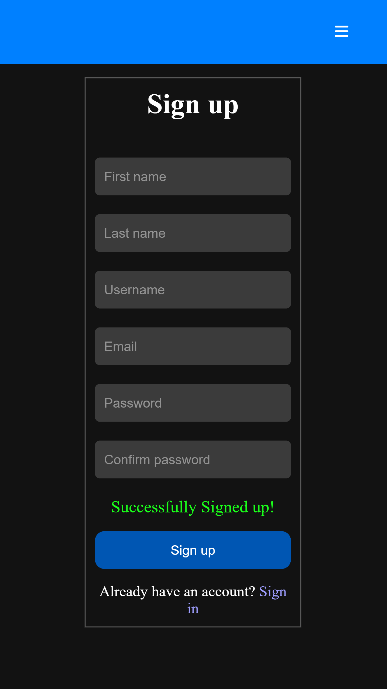
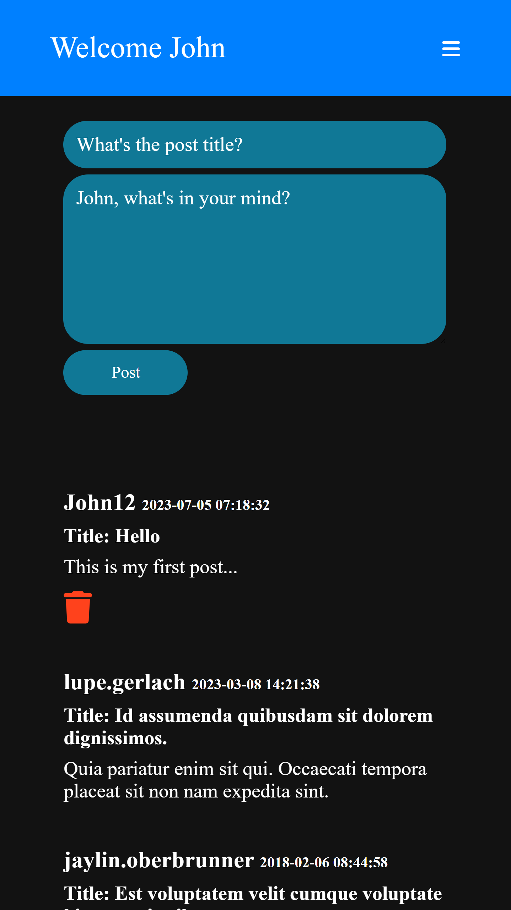
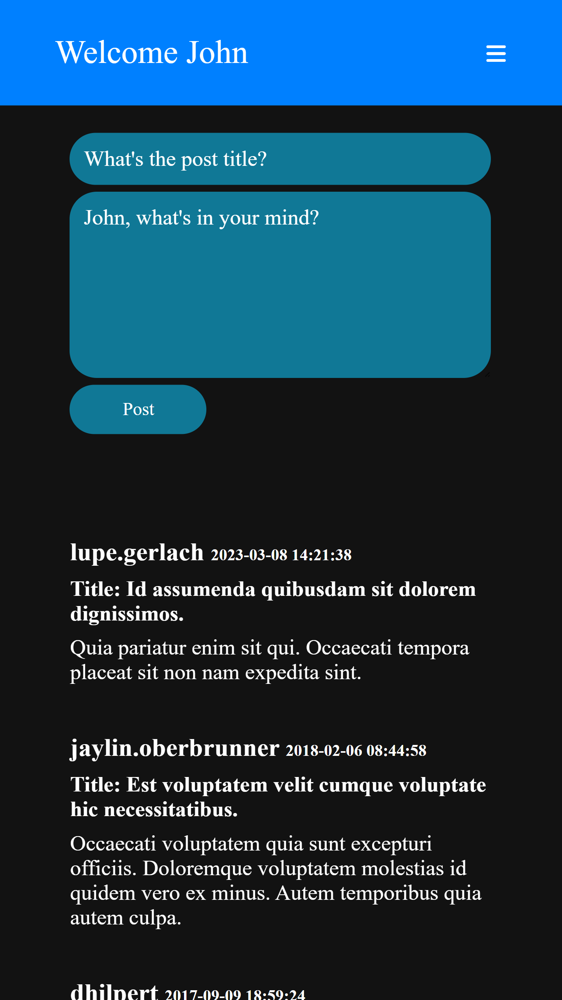

A SOCIAL MEDIA PLATFORM
A platform that uses a RESTful API architecture for user registration, sign in, sign out, post creation, and deletion.
Sign upFEATURES
USER REGISTRATION
A user-friendly and visually appealing interface that ensures a smooth registration experience. Once a user completes the registration process, a clear success message is displayed.
POST CREATION
A user-friendly and visually appealing interface that allows users to effortlessly create engaging posts. Users can easily compose and publish their content, and the created posts will be automatically retrieved and displayed to the audience.
POST DELETION
A user who created a post has the capability to delete their own posts.
ABOUT ME
EDUCATION
Backend Developer, Alx Africa 2022 - 2023
BSc in Leather Engineering, Bahirdar University 2016 - 2021
WHO AM I
Hello, my name is Bantamlak Tilahun, and I am a passionate software engineering student. I have completed my BSc degree in leather engineering from Bahirdar University. However, my strong interest and passion for software engineering and technology led me to pursue further studies at Alx Africa, a prestigious school in partnership with Holberton.
During my nine-month stay at Alx Africa, I immersed myself in the core principles and foundations of software engineering. I gained in-depth knowledge and hands-on experience.
As part of the nine-month journey, I developed this portfolio project. It showcases my proficiency in building a social media platform from scratch. Throughout the development process, I applied best practices in software engineering.
This project allowed me to demonstrate my ability to design and implement a backend using Flask, handle user authentication and authorization, integrate frontend frameworks, manage databases, and deploy the application to a production environment.
I am continuously seeking opportunities to enhance my skills, and I am confident that my passion, dedication, and acquired knowledge will enable me to excel in any software endeavor I undertake.
Thank you for visiting my portfolio project. Feel free to explore and reach out to me.